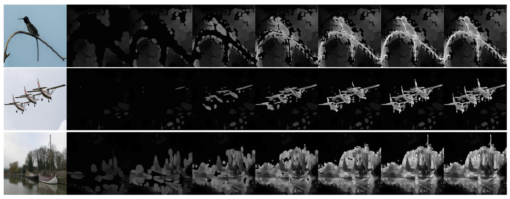
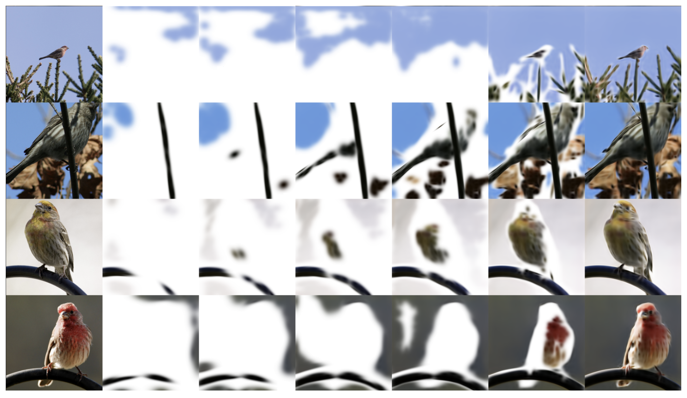
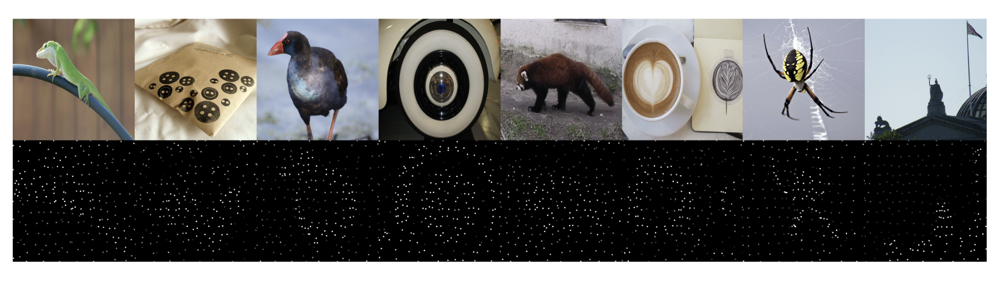

Gaussian Masked Autoencoders
Jathushan Rajasegaran1,2,
Xinlei Chen1,
Rulilong Li2,
Christoph Feichtenhofer1,
Jitendra Malik1,2,
Shiry Ginosar3
1 Meta AI, FAIR, 2 UC Berkeley, 3 Toyota Technological Institute at Chicago
This paper explores Masked Autoencoders (MAE) with Gaussian Splatting.
While reconstruction-based self-supervised learning frameworks, such as MAE, learn good semantic abstractions, they are not trained for explicit spatial awareness.
Our approach, named Gaussian Masked Autoencoders, or GMAE, aims to learn semantic abstractions and spatial understanding from image observations.
Like MAE, GMAE reconstructs the image end-to-end in the pixel space, but beyond MAE, it also introduces an intermediate, 3D Gaussian-based representation and renders 2D images via Gaussian splatting.
We show that GMAE can enable various zero-shot learning capabilities of spatial understanding (e.g., figure-ground segmentation, image layering, edge detection, etc.) while preserving the high-level semantics of self-supervised representation quality of MAE without additional computational cost.
To our knowledge, we are the first to employ Gaussian primitives in an image representation learning framework beyond optimization-based single-scene reconstructions. We believe GMAE will inspire further research in this direction and contribute to developing next-generation techniques for modeling high-fidelity visual data.
Introduction
Vision systems, by nature, process raw, low-level observations of the world, but visual reasoning frequently requires spatial understanding as well as higher-level semantic abstractions of the data. In this work, we aim to learn the structure of the world, which is constructed from objects and their relationships in 3D space. We learn these abstractions from raw image observations by learning masked auto-encoders controlled by 3D Gaussians as their intermediate representations.
What sort of spatial understanding does visual reasoning require? In this work, we take inspiration from Wang and Adelson, who demonstrated that the simplest version of a spatially-aware representation consisting of 2.1D layers is sufficient for representing objects that inherently move with respect to one another. Even in static images, layered representations allow us to learn more about the structure of the world. We, therefore, set ourselves the task of learning image representations that are both layered and at the level of abstraction of single objects.
Learning high-level semantic abstractions can be achieved by supervised learning or by learning binding from large scale paired datasets. However, self-supervised learning has recently emerged as the more promising approach in this direction. Notably, Masked Autoencoders (MAE) demonstrated that self-supervised learning is an effective representation learning mechanism by directly predicting the RGB values of masked image patches.
However, while the leading methods, such as MAE and DINO, learn higher-level representations of images, they are not trained for explicitly recovering the spatial structure of objects and scenes in the world.
Masked Autoencoding via Gaussian Splatting: The ViT Encoder processes masked input image patches to produce latent embeddings. The ViT Decoder then predicts explicit Gaussian parameters based on query tokens, including color, opacity, center, scale, and orientation. These Gaussians are then rendered via differentiable volume splatting to reconstruct the original image. We pre-train our models fully end-to-end with self-supervision.
This paper proposes jointly learning high-level semantic abstractions such as objectness, grouping, and semantic structure with 2.1D layering via self-supervised learning. Our idea is conceptually simple: given MAE, a pixel-based self-supervised representation learning approach, we design mechanisms that can lead to desirable intermediate representations as learned latents. Specifically, our central insight is that 3D Gaussians are a good candidate for intermediate image representations that can lead to semantic and spatial understanding.
3D Gaussians were initially proposed for optimization-based 3D reconstruction. Different from geometrically uniform representations like square pixel patches, their size, location, and information distribution over the image are dynamically learned. Moreover, Gaussian-based representations could lend themselves to end-to-end learning thanks to splatting image rendering that maps them back to the pixel space. We can, therefore, jointly learn such a mid-level representation within self-supervised frameworks such as MAE. We name our approach Gaussian Masked Autoencoders, or GMAE. To the best of our knowledge, we are the first to explore such Gaussian primitives in a visual representation learning framework, rather than an optimization-based 3D reconstruction framework for single scenes. Our approach adds only a negligible overhead compared to standard MAE training -- the addition of splatting increases compute time by 1.5%. Without compromising representation-learning performance, GMAE gains significant wins in zero-shot capabilities.
Fig. 1 shows several built-in advantages of a Gaussian-based image representation. First, we note that the non-uniformity of the representation leads to a spatial distribution of representational density that correlates with the information density in the image. By allowing the 3D Gaussians to move along the z-axis, our model learns underlying structure of the natural world by observing not only the single viewpoint of one image but millions of such single views. As a result, we can find figure-ground segmentation, simple layering, and edge detection as depth discontinuity without any tuning.
Besides these advantages, we show that the representations learned with GMAE perform similarly to MAE on image classification and object detection tasks. The representation quality improves with the number of Gaussians used. These results suggest GMAE augments MAE and can serve as a better alternative in applications that can benefit from using mid-level representations. The advantage of GMAE becomes apparent when considering that splatting-based rendering is highly efficient, and our current training is almost as fast as vanilla MAE baselines.
We hope our exploration can inspire further research along this hybrid direction for representation learning: the reconstruction target is grounded to pixels while jointly learning effective high-level semantic abstractions and spatial understanding with mid-level representations for images. We believe it can contribute to the next generation of techniques for modeling high-fidelity visual data.
Gaussian Masked Autoencoders (GMAE) maintains high performance in supervised representation learning tasks such as classification, detection, and segmentation, but more importantly enables zero-shot capabilities. GMAE introduces a learned mid-level intermediate representation of 3D Gaussians that we train using pixel-based image reconstruction losses rather than direct supervision by rendering the Gaussians into pixel space. Through this reconstruction loss, the Gaussian collection learns to distribute non-uniformly in space and scale, dynamically following the input image's information density and high-frequency details. Having the degree of freedom in depth allows the model to learn the layering of objects and scenes, which enables figure-ground separation, layering, and edge detection without any training.
Our Approach
Our model has a ViT-based encoder model, a lightweight decoder model, and a differentiable renderer. Fig. 2 shows a high-level overview of our method. For a given image, we first patchify it into $N$ patches and randomly mask them with a masking ratio $r$, resulting in $n$ visible patches. The ViT encoder model only sees the visible patches and encodes them from patches to latent embeddings, $x_i \in \mathcal{R}^{d_{enc}}, \ i \in \{1,2,3,...n\}$.
Assume the decoder has $k$ learnable query tokens $q_{j} \in \mathcal{R}^{d_{dec}}, j\in\{0,1,2,... k\}$. Note that $k$ can be any value irrespective of the number of masked tokens. We project the encoder latent to $\hat{x}_i \in \mathcal{R}^{d_{dec}}$ and concatenate it with the query tokens.
$$X_{dec} = \{\hat{x}_i\}_{i=1}^n \cup \{q_j\}_{j=1}^k$$
The decoder sees the $X_{dec}$ tokens and predicts $k$ Gaussians, one for each query token (we discard the predictions for the latent tokens). Each Gaussian is parameterized by a 14-dimensional vector ${g}_{j} = \{{p}, {s}, {\phi}, {r}, {o}\} \in \mathcal{R}^{14}$.
Once we have $k$ predicted Gaussians, we splat them on a plane with a fixed camera projection and render the splatted Gaussians to generate an image. We limit the size of the Gaussians by using an effective scale $c \cdot \texttt{sigmoid}({s})$. Here, $c$ controls a Gaussian's maximum size. After rendering, we use a mean squared error loss to compare the reconstructed image with the input image on the originally masked pixels.
Note that since the Gaussians are the output of the decoder, they are effectively randomly initialized. This is in contrast to the typical usages of Gaussian splatting for 3D reconstruction that rely on point-cloud initialization. In this work, we do not use any prior knowledge. We directly learn all the Gaussian properties from reconstructing the image.
Experiments
Ablation studies on different model space: We ablate various configurations for pre-training, including a) the maximum allowed scale for a Gaussian, b) masking ratio at the encoder, and c) which loss is used for pre-training, from applying loss on all patches, only on masked patches to patch-normalized loss. We report classification performance on ImageNet, where higher is better.
Evaluation on Standard Vision Tasks: We evaluate our ViT-base model (pre-trained for 400 epochs, masking ratio 0.75) on ImageNet-1k classification and COCO object detection/segmentation. For ImageNet, we achieve comparable performance to MAE after 100-epoch fine-tuning, with performance improving as we increase the number of Gaussians. On COCO, toto matches MAE's performance in both AP$^\text{box}$ and AP$^\text{mask}$ metrics while significantly outperforming supervised pre-training.

Visualization of Gaussian layers: The first column shows the RGB input image, and the subsequent columns show the Gaussian layers in inverse-depth ordering. The layer-wise rendering highlights the model's ability to separate objects and represent them in distinct frequency layers, enabling zero-shot foreground-background segmentation and edge detection.

Visualization of Gaussian layers on RGB: The first column shows the RGB input image, and the rest of the columns show rendering of partial depth Gaussians. We select first $K$ Gaussians from all the Gaussians after sorting based on depth. Then we only render these $K$ Gaussians. The Figure shows $K=32$, $64$, $128$, $256$, $512$, $1024$, and the last being fully rendered image using all Gaussians.
Zero-shot edge detection: Gaussians from our decoder are grouped into equal sets of layers, based on their depth ordering. Then we render each layer one by one and update the pixel if adding that layer makes significant change in that pixel. From this layered image, we simply find edges if there is a discontinuity from one layer to another. We can get a hierarchy of edges by decreasing the number of layers (or increasing the width of a layer). These results are on BSDS500. $l@16$ means we have a total of 16 uniformly grouped layers.

Distribution of Gaussians on xy-plane: We plot the xy position of Gaussian centers along with their opacity values. Unlike patches, Gaussians are positioned dynamically based on the image. For example, in the 4th image, Gaussians are arranged in a circular pattern, while in the 2nd image there arranged as a rectangle. This degree of freedom allows them to add high-frequency signals to the image, by concentrating more Gaussians to those regions.
Discussion
This paper presents GMAE, a self-supervised image representation learning approach that extends MAE to include a learned intermediate Gaussian representation. We show that learning to represent images with 3D Gaussians has several built-in advantages that stem from their non-uniform dynamical allocation of scale, location, and distribution. Our method, therefore, lends itself to zero-shot capabilities such as foreground-background segmentation, image layering, and edge detection. Along with these advantages, we demonstrate that the representation learned by our method is on par with MAE on standard supervised image recognition tasks and that it transfers to downstream tasks such as detection and segmentation via fine-tuning.
GMAE still exhibits several empirical limitations. For example, setting larger scale values at the start of training results in a more challenging optimization. Compared to the number of Gaussians typically used for 3D reconstructions (up to millions), the number of Gaussians we have used in GMAE is bottlenecked by compute, and increasing it to more than a thousand can cause major slow-downs for pre-training. An interesting future direction is to further accelerate our pipeline.
Nonetheless, we have shown that one no longer has to choose between pixels and latent representations for visual modeling. We hope our exploration can inspire more work in this direction and truly unlock the next generation of techniques that effectively model visual data.
Citation
@article{gmae,
title={Autoregressive Pre-training from Videos},
author={Jathushan Rajasegaran, Xinlei Chen, Rulilong Li, Christoph Feichtenhofer, Jitendra Malik, Shiry Ginosar},
year={2024}
}